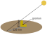

Read and use mathematical models in a technical document
Communicate results in mathematical notation and in language appropriate to the technical field
This section covers the following mathematical concepts.
Use models including linear, quadratic, exponential/logarithmic, and trigonometric (skill)
Analyze right triangles (skill)
This section demonstrates identifying right triangles in applications and applying trigonometric functions to calculate desired information.
Subsection7.2.1Calculating lengths using trig functions
This section demonstrates using trigonometric functions to calculate lengths in an application when we know an angle and a side length.
First, we define terminology we need to describe the applications.
Definition7.2.1.Angle of Elevation.
The angle of elevation of an object or observation is the angle measured from level (often the ground) up to the object (or line of sight).
Definition7.2.2.Angle of Depression.
The angle of depression of an object or observation is the angle measured from level down to the object (or line of sight).
Figure7.2.3.Illustrations of Angles of Elevation and Depression
For all of these applications our first task is to recognize a right triangle in the problem. We must also identify what the two legs and/or the hypotenuse are in the application. Then we can set up an equation using a trigonometric function, and use the equation to calculate something.
Example7.2.4.
For safety reasons the optimal angle of elevation of a ladder is 75°. If the ladder is 16 ft long, at what height will the top of the ladder be resting against a wall?
First, it is often useful to sketch an image. This makes it easier to identify triangles or other shapes. Note the sketch does not need to be artistic.
We notice that the ladder forms the hypotenuse of a right triangle with the ground and the wall. Next we identify details. We know an angle (75° angle of elevation from the ground) and the length of the hypotenuse (length of the ladder). We want the length side opposite the angle (height along the wall). From this information (opposite, hypotenuse, angle) we can recognize the need for the sine function.
Thus the top of the ladder is 15.5 feet up the wall. We rounded to tenths, because measuring a hundredth of a foot is impractical. A half foot (6″) is easy to measure.
Example7.2.5.
We may also wish to know how far from the wall to place the bottom of the ladder. That is calculating the length of the side adjacent to the angle of elevation, so we use the cosine function.
This is quite close to the previous solution, specifically the difference is too small to effect ladder placement. The difference is the result of using the 15.45 length which was rounded.
Example7.2.6.
Measuring the heights of tall objects is a use of trigonometry that has been around for millenia.
We want to determine the height of a tree, but dropping a measuring tape from the top is impractical. Instead we can use its shadow, which being on the ground, is easier to access.
The shadow of a tree is measured to be 103 ft (measured from the base of the tree to the end of the shadow). From the end of the shadow the angle of elevation to the sun is measured to be 63°. How tall is the tree?
This forms a right triangle with angle 63°, and an adjacent side length of 103 ft. We want the length of the opposite leg. Because we know the adjacent and want the opposite we use the tangent function.
The tree is approximately 200 feet high. We round using significant digits because this was based on measurements. We do not want to claim a precision about the height which is not valid.
Example7.2.7.
Aircraft typically fly a 3° angle of depression to a point 1020 ft past the start of the runway. How high would the plane be when it crosses the runway threshhold?
Solution.
This is a right triangle with adjacent leg length 1020 ft and angle 3°. The length of the opposite is the height at the threshold.
We round to the nearest foot, because aircraft cannot be controlled precisely enough for inches to matter.
Checkpoint7.2.8.
Subsection7.2.2Calculating angles using trig functions
This section demonstrates how to calculate the angles when we know the side lengths of a right triangle.
Example7.2.9.
If the gnomon of a sundial is 89 mm tall and the shadow the sun casts on the sundial is \(12\bar{0}\) mm long, what is the angle of elevation of the sun?

The gnomon and surface form the legs of a right triangle. This means we can use the inverse tangent to calculate the angle. With respect to the angle of the sun, the surface is the adjacent and the gnomon is the opposite.
Significant digits rounding is used because these are from measurements.
Example7.2.10.
An airliner is at 13,000 feet MSL and is cleared to descend to 9,000 feet MSL. This descent will be accomplished over 22 nm. What is the angle of descent?
First, we will need to convert 22 nm to feet. The unit conversions in Table 1.1.2 suggest we can multiply \(\frac{6076 \text{ ft}}{1 \text{ nm}} \cdot 22 \text{ nm} = 133672 \text{ ft}\text{.}\)
The 133,672 ft is the length of the adjacent side. The length of the opposite side is the change in altitude which is 13,000−9,000 = 4,000 ft. Because the horizontal and vertical components are legs of a right triangle, we can use the inverse tangent function to calculate the angle. The horizontal change is the adjacent side, and the vertical change is the opposite side.